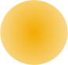
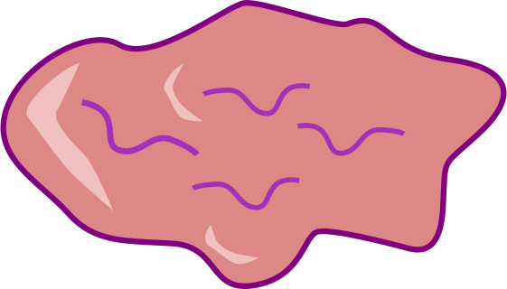
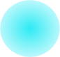

Disc Throw: An Epic Experience
How to play
The goal of the game is to get the blue puck onto the center of the target. Unfortunately, you can't just drag it there. You'll have to use the three yellow pucks provided, plus your amazing physics skills, to move the blue puck to the target.As you keep playing you'll advance through the levels! Try to get as close to the center of the target as possible to earn more points.
The objects
| Type of object | Description |
|---|---|
|  | This is a puck. Click and drag on it to hit it! By moving your mouse around it and away from it, you can alter its angle and direction. |
|  | Gum makes you stick! |
| This is a black hole! Don't whack your puck here or you'll be out of luck. | |

|
Whoops! Somebody put a screw here. Your puck will bounce off of these. |
|  | This is a very special puck. You need to use the yellow pucks to move this one onto the target. Make sure that you avoid the dangerous obstacles mentioned above! |